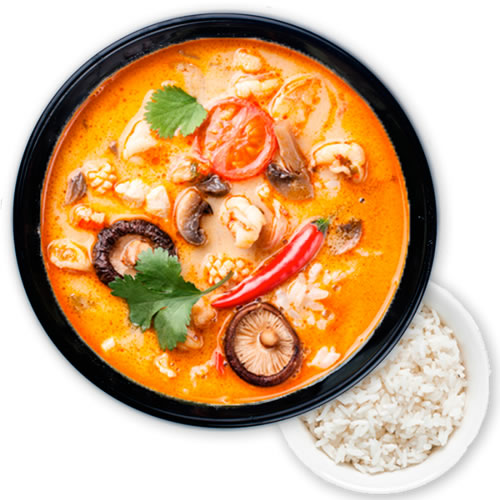

THE MAIN-COURSES

Käeng Pet med ris o sallad
Rödcurry gryta med kött el. kyckling, bambuskott, kokosmjölk, basilika, paprika, gröna bönor
Käeng Khiew whan ris o sallad
Gröncurry gryta med kött el. kyckling, bambuskott, kokosmjölk, basilika, paprika, gröna bönor
Käeng Panäeng med ris o sallad
Panäengcurry gryta med kött el. kyckling, vattenkastanjer, minimajs, kokosmjölk, paprika, gröna bönor, jordnötter
Käeng Massaman med ris o sallad
Massamancurry gryta med kött el. kyckling, ananas, minimajs, vattenkastanjer, lök, jordnötter, morot, kokosmjölk